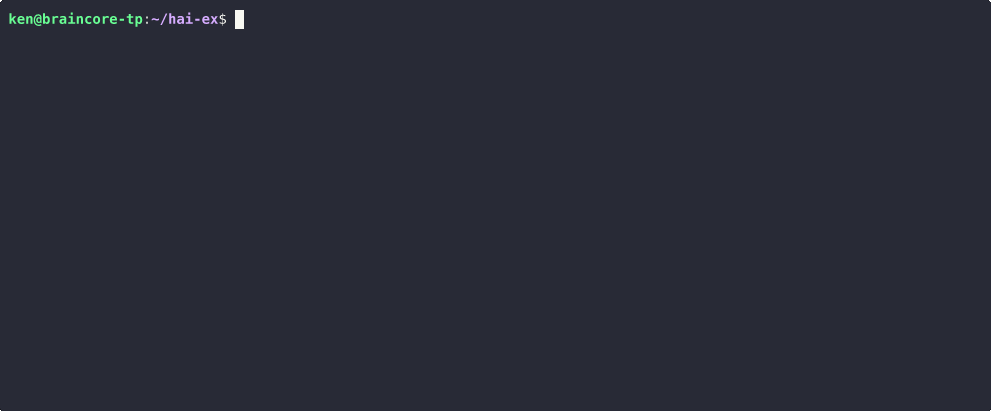

LLM models¶
hai supports models from OpenAI, Anthropic, DeepSeek, Google, and xAI. Local
models served via llama.cpp or Ollama are supported as well.

Default model¶
The default model is the active model when a new instance of hai is launched.
Select a default model with:
/ai-default <model>
This writes to your hai.toml config which
can also be changed manually:
default_ai_model = "gpt-5.1-chat"
If a default model isn't set, it's automatically chosen based on API key availability.
Switching models¶
Switching is as easy as:
/ai <model>
Models can even be switched mid-conversation as long as the target model supports all the capabilities (images, tools) utilized in the conversation.
Notable models¶
| Provider | Notable Models (Not Comprehensive) |
|---|---|
| OpenAI | gpt-5.2 (g52), gpt-5.2-chat (g52c), gpt-5-mini (g5m), gpt-5-nano (g5n), gpt-4.1 (41), gpt-4.1-mini (41m), gpt-4.1-nano (41n) |
o4-mini (o4m), o3, o3-mini (o3m), o1, o1-mini (o1m) |
|
| Anthropic | sonnet-4 (sonnet), sonnet-4-thinking (sonnet-thinking), opus-4 (opus), opus-4-thinking (opus-thinking), haiku-3.5 (haiku) |
gemini-3-pro (gemini3pro), gemini-3-flash (flash3), gemini-2.5-pro (gemini25pro) |
|
| DeepSeek | deepseek-reasoner (r1), deepseek-chat (v3) |
| xAI | grok-4 |
| Ollama | gemma3:27b, gpt-oss:20b, llama3.2, llama3.2-vision |
If a model doesn’t have a built-in shortcut, or if you want to use a specific
version, you can specify it as <ai_provider>/<official_model_name>.
llama.cpp server¶
llama-server serves only one model per instance decided by the command-line
arguments. Because the model parameter in the API request is ignored,
llamacpp can be specified as the <ai_provider> without any model name.
/ai llamacpp
Model-specific options¶
Some models support additional options. These are specified as a list of comma- delimited keys or key-values following the model name:
/ai <model>,<option1>[=<value1>],...
| Model | Option key | Accepted Values |
|---|---|---|
| GPT-5 | reasoning (r) |
minimal (min), low (l), medium (m), high (h) |
| GPT-5 | verbosity (v) |
low (l), medium (m), high (h) |
| GPT-5.2 | reasoning (r) |
GPT-5 reasoning options, none (n), xhigh (xh) |
| Gemini-3 | reasoning (r) |
minimal (min), low (l), medium (m), high (h) |
| Sonnet-3.7 | thinking (t) |
none, setting key alone is sufficient |
| Sonnet-4.x | thinking (t) |
none, setting key alone is sufficient |
| Opus-4.x | thinking (t) |
none, setting key alone is sufficient |
Examples:
/ai gpt-5,reasoning=low,verbosity=medium
/ai gpt-5,r=l,v=m
/ai gpt-5,r=h
/ai flash3,r=h
/ai sonnet,thinking
/ai sonnet,t